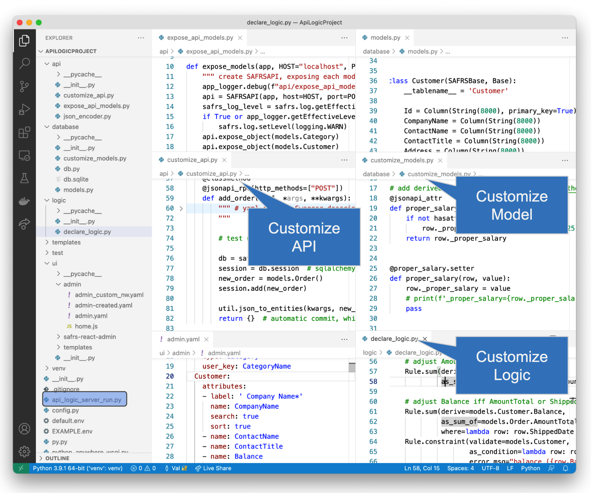

TL;DR - instant projects, standard customization, unique declarative rules
TL;DR - instant projects, standard customization, unique declarative rules
Use the ApiLogicServer create command to create a Flask/SQLAlchemy project from your database. Projects are instantly executable, providing:
- an Admin App: multi-page, multi-table apps -- ready for Business User collaboration
- an API: end points for each table, with filtering, sorting, pagination and related data access -- ready for custom add dev
Use your IDE to customize and debug your application:
- Use standard Python/Flask/SQLAlchemy to create new services
- Declare security and multi-table constraint/validation logic, using unique spreadsheet-like rules - 40X more concise than code.
 Extend logic with Python events.
Extend logic with Python events.
Click to see Created Admin App, Project
Created Admin App
The Admin App is shown below:

Customize in IDE
VSCode and PyCharm users can customize and run/debug within their IDE with these steps. Created projects include Launch and Docker configurations.

Rebuild services are provided to accommodate changes to database structure or ORM classes.
Video - What is API Logic Server
API Logic Server is an open source Python project, consisting of a CLI and set of runtimes (SAFRS API, Flask, SQLAlchemy ORM, business logic engine) for project execution.
It runs as a standard pip install, or under Docker. For more on API Logic Server Architecture, see here.
Click the image below for a video tutorial, showing complete project creation, execution, customization and debugging.

Instant Evaluation - no install
Run in the cloud: VSCode via your Browser, courtesy Codespaces. Use your existing GitHub account (no signup is required), and:
-
Click here to open the Create Codespace page.
-
Configure as desired, and click Create codespace.
This process takes about a minute. Wait until you see the port created.
We think you'll find Codespaces pretty amazing - check it out!
Why It Matters:
Faster, Simpler, Modern Architecture
API Logic Server can dramatically improve web app development:
-
Automation makes it faster: what used to require weeks or months is now immediate. Unblock UI Dev, and engage business users - early - instead of wasting time on a misunderstanding.
-
Automation makes it simpler: this reduces the risk of architectural errors, e.g., APIs without pagination.
-
Automation guarantees a modern software architecture: container-ready, API-based, with shared logic between UIs and APIs (no more logic in UI controllers), in a predictable structure for maintenance.
Flexibility of a Framework, Faster than Low Code
Current approaches for building database systems have shortcomings:
- Frameworks: Frameworks like Flask or Django enable you to build a single endpoint or Hello World page, but
- Require weeks or more for a multi-endpoint API and multi-page application
- Low Code Tools: are great for building custom UIs, but
- Slow Admin app creation, requiring layout for each screen
- Propietary IDEs don't preserve value of traditional IDEs like VSCode, PyCharm, etc
- No automation for backend business logic (it's nearly half the effort)
API Logic Server provides:
-
Flexibility of a framework: use your IDE's code editor and debugger to customize the created project, with full access to underlying Flask and SQLAlchemy services
-
Faster than low code for admin apps: you get a full API and Admin app instantly, no screen painting required
Use Cases
There are a variety of ways for getting value from API Logic Server:
-
Create and Customize database web apps - the core target of the project
-
Admin App for your database - the Admin App is a create way to navigate through your database, particularly to explore data relationships
-
Data Repair - using the Admin App with logic to ensure integrity, repair data for which you may not have had time to create custom apps
-
Project Creation - even if you do not intend to use the API, Admin App or logic, you can use API Logic Server to create project you then edit by hand. Created projects will include the SQLAlchemy Data Models, and project structure
-
Learning - explore the Learning Center to learn about key concepts of Flask and SQLAlchemy
Feature Summary
| Feature | Providing | Why it Matters | |
|---|---|---|---|
| Instant | 1. Admin App | Instant multi-page, multi-table app (running here on PythonAnywhere) | Business Users engaged early Back-office Admin |
| 2. JSON:API and Swagger | Endpoint for each table, with... Filtering, pagination, related data |
Custom UI Dev App Integration |
|
| 3. Data Model Class Creation | Classes for Python-friendly ORM | Custom Data Access Used by API |
|
| Customizable | 4. Customizable Project | Custom Endpoints, Logic Use Python and your IDE |
Customize and run Re-creation not required |
| Unique Logic | 5. Spreadsheet-like Business Rules |
40X more concise - compare legacy code |
Unique backend automation ... nearly half the system |
| Customizable with Python | Familiar Event Model | Eg., Send messages, email | |
| Testing | 6. Behave Test Framework | Test Suite Automation Behave Logic Report Drive Automation with Agile |
Optimize Automation to get it fast Get it Right with Agile Collaboration |
Getting Started - Install, Tutorial
API Logic Server is designed to make it easy to get started:
-
Install and run Tutorial - install, and explore the tutorial. The tutorial creates 2 versions of the sample database
- without customizations - so you to see exactly what is automated from the
ApiLogicServer createcommand - with customizations - so you can see how to customize
- without customizations - so you to see exactly what is automated from the
-
Installed Sample Databases - Here are some installed sample databases you can access with simplified abbreviations for
db_url. -
Dockerized Test Databases - Then, you might like to try out some of our dockerized test databases.
-
Your Database - Finally, try your own database.
Project Information
Making Contributions
This is an open source project. We are open to suggestions for enhancements. Some of our ideas include:
| Component | Provides | Consider Adding |
|---|---|---|
| 1. JSON:API and Swagger | API Execution | Security authenticate, role-based access control active development Multi-DB support multiple databases active development/ API Serverless / Kubernetes - extend containerization |
| 2. Transactional Logic | Rule Enforcement | New rule types |
| 3. SAFRS React Admin | Admin UI Enhancements | Maps, trees, ... |
| 4. This project | API Logic Project Creation | Support for features described above |
To get started, please see the Architecture.
Preview Version
You can try the pre-release at (you may need to use python3):
python -m pip install --index-url https://test.pypi.org/simple/ --extra-index-url https://pypi.org/simple ApiLogicServer==8.1.11
Or use:
```bash
docker run -it --name api_logic_server --rm -p 5656:5656 -p 5002:5002 -v ~/dev/servers:/localhost apilogicserver/api_logic_server_x
Or, you can use the beta version on codespaces.
Status
We have tested several databases - see status here.
We are tracking issues in git.
Acknowledgements
Many thanks to:
- Thomas Pollet, for SAFRS, SAFRS-react-admin, and invaluable design partnership
- Nitheish Munusamy, for contributions to Safrs React Admin
- Marelab, for react-admin
- Armin Ronacher, for Flask
- Mike Bayer, for SQLAlchemy
- Alex Grönholm, for Sqlacodegen
- Meera Datey, for React Admin prototyping
- Denny McKinney, for Tutorial review
- Achim Götz, for design collaboration and testing
- Max Tardiveau, for testing and help with Docker
- Michael Holleran, for design collaboration and testing
- Nishanth Shyamsundar, for review and testing
- Thomas Peters, for review and testing
- Tyler Band, for review, design input and functionality suggestions
- Gloria Huber and Denny McKinney, for doc review
Articles
There are a few articles that provide some orientation to API Logic Server:
- How Automation Activates Agile
- How Automation Activates Agile - providing working software rapidly drives agile collaboration to define systems that meet actual needs, reducing requirements risk
- How to create application systems in moments
- Stop coding database backends…Declare them with one command.
- Instant Database Backends
- Extensible Rules - defining new rule types, using Python
- Declarative{:target="blank" rel="noopener"} - exploring _multi-statement declarative technology
- Automate Business Logic With Logic Bank - general introduction, discussions of extensibility, manageability and scalability
- Agile Design Automation With Logic Bank - focuses on automation, design flexibility and agile iterations
- Instant Web Apps
-
See the FAQ for Low Code ↩